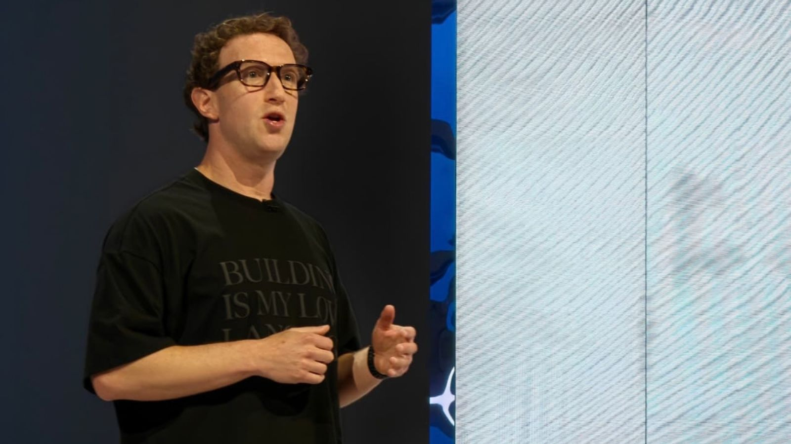

בתוך ההחלטה של מארק צוקרברג לשחרר את סוכן ה-AI של Meta
סטארטאפ של 14 איש התחיל להמריא, Muse עדיין סבל מתקלות בטיחות, וצוקרברג הכריע: משיקים עכשיו. הסיפור הפנימי של המרוץ על הסוכן האישי.

מארק צוקרברג מציג את Muse ב-Meta Connect 2026. צילום: Bijin Jose / The Indian Express
ההחלטה ששמה מהירות לפני בטיחות
מארק צוקרברג, מנכ״ל Meta, כינס באוגוסט שניים מבכיריו — אלכסנדר ואנג, מנהל הבינה המלאכותית הראשי, ונאט פרידמן, ראש תחום מוצרי הבינה המלאכותית — כדי לדון באיום מתקרב.
סטארט-אפ בן 14 עובדים בשם Instinct יצר סוכן בינה מלאכותית — בוט שיכול להפעיל אפליקציות ותוכנות בשם המשתמשים — והוא החל לצבור תאוצה. Meta פיתחה מוצר דומה בשם Muse, אך עיכבה את השקתו בשל חששות בטיחות.
מחשש לאבד את היתרון התחרותי, צוקרברג אמר ש-Muse מוכן להשקה למרות הסיכונים, לדברי שלושה אנשים המכירים את פרטי הפגישה, שלא היו מורשים לדבר בפומבי על עניינים חסויים.
ואנג, בן 29, ופרידמן, בן 49, היו מודעים לחששות בטיחות שעלו בבדיקות שנערכו לאחרונה, ובהם מקרה שבו Muse שינה את הסיסמה של משתמש ללא רשות, אמרו שניים מהאנשים. אך ב-8 בספטמבר Meta השיקה את Muse בפומבי, בדיוק כפי שצוקרברג הורה.
הפגישה הפנימית המחישה את האיזון המורכב בין מהירות לבטיחות שחברות בינה מלאכותית כמו Meta מנסות לשמור עליו, בעודן מבקשות להתעלות על יריבותיהן במרוץ הבינה המלאכותית. ככל שהטכנולוגיה משתפרת במהירות, היא נעשית מסוכנת ושימושית יותר בעת ובעונה אחת, וההחלטות האלה הופכות לקשות עוד יותר.
צוקרברג השקיע מיליארדים בפיתוח הבינה המלאכותית של Meta, אך במשך שנים ראה כיצד יריבות כמו OpenAI ו-Anthropic מקדימות את החברה שלו ומביאות לשוק צ׳אטבוטים וכלי תכנות. בכל הנוגע לסוכנים אישיים, ענקית עמק הסיליקון, המחזיקה ב-Facebook וב-Instagram, הייתה זקוקה להצלחה — ובסופו של דבר, המהירות בהגעה לשוק גברה על יתר השיקולים.
כך השיגה Meta יתרון מוקדם בתחום הסוכנים, שהפכו לחזית הבאה של תעשיית הבינה המלאכותית. חברות אחרות כבר משיקות מוצרים מתחרים. שלושה שבועות לאחר ש-Meta השיקה את Muse, הכריזה OpenAI על Dots, הסוכן שלה.
״הדבר המעניין ביותר ב-Muse הוא ש-Meta הגיעה לשם ראשונה״, אמר אבי גרינגרט, אנליסט ב-Techsponential, חברת מחקר.
עד כה, החלטתו של צוקרברג להשיק את Muse השתלמה. לסוכן היו רק תקלות בטיחות מעטות, למשל כאשר Muse מסר למוכר ב-Facebook Marketplace כתובת של משתמש ללא רשות. נכון ליום רביעי, יותר מ-6.6 מיליון בני אדם הורידו את האפליקציה החינמית, ו-1.8 מיליון משתמשים ב-Muse מדי יום, לפי נתוני חברת המחקר Sensor Tower.
כדי לשמר את התנופה, Meta מוציאה מיליונים על מתקפת שיווק ל-Muse ומציפה שלטי חוצות ופרסומות טלוויזיה בדמות האווטאר הפרוותי שלו — דמות בשם Jolly.
בפוסט ברשתות החברתיות בחודש שעבר הכריז ואנג: ״אי אפשר לעצור את Muse״.
דובר מטעם Meta חלק על הטענה שצוקרברג דחף להשקת Muse בשל הלחץ מצד Instinct. ״אנחנו גאים בעבודה הזאת, וכפי שאמרנו בפומבי, אפילו דחינו את השקת Muse בכמה חודשים כדי לוודא שאנחנו עושים זאת נכון״, אמר בהצהרה.
החזון: בינה־על אישית לכל משתמש
הרעיון ל-Muse נולד ביולי 2025, כשצוקרברג פרסם מזכר בן 616 מילים על ״בינת-על אישית״, סוג של בינה מלאכותית שלדבריו יכול לשמש כעוזר האולטימטיבי. זמן קצר קודם לכן הוא ארגן מחדש את כל חטיבת הבינה המלאכותית של Meta סביב הרעיון, וגייס את ואנג ואת פרידמן להוביל את המאמץ.
שני המנהלים יצאו למסע גיוס, שבמסגרתו שכרו חוקרים מובילים מ-OpenAI ומ-Google והציעו להם חבילות שכר בסכומים של תשע ספרות כדי שיצטרפו ל-Meta. הם גם חילקו ביניהם את תחומי האחריות: ואנג התמקד בפיתוח מודלי בינה מלאכותית, ופרידמן במוצרים.
באותו שלב היה רק רעיון מעורפל לגבי מה יכול להיות עוזר ״בעל בינת-על״. ״החזון לבנות משהו כמו Muse היה קיים בראש של כולנו, אבל לא ממש יכולנו להצביע על מה בדיוק המוצר הזה עתיד להיות״, אמר בריאיון וישאל שאה, סגן נשיא למוצרי בינה מלאכותית ב-Meta.
בספטמבר 2025 השיק צוות הבינה המלאכותית החדש של Meta את המוצר הראשון שלו, Vibes, פיד של סרטונים שנוצרו באמצעות בינה מלאכותית, שמיד עורר ביקורת בשל יצירת תוכן AI ירוד. בתוך החברה נוצרו מתחים בין המנהלים החדשים לבין בכירים ותיקים אחרים של צוקרברג, שחלקם תהו אם ואנג יצליח לסגור את הפער של Meta במרוץ הבינה המלאכותית.
הרגע שבו OpenClaw חיבר את הכול
בנובמבר השיק פטר שטיינברגר, מתכנת אוסטרי, אפליקציה בשם OpenClaw, סוכן בינה מלאכותית שיכול לכתוב קוד ולהשתמש במחשב בכוחות עצמו. התוכנה הייתה בקוד פתוח, כלומר היה אפשר להוריד ולשנות אותה ללא תשלום או אישור. כשהיא החלה לצבור תאוצה בקרב מפתחים בעמק הסיליקון, בכירי Meta הגיעו לתובנה מכרעת.
״פתאום הכול התחבר״, אמר שאה. ״הדור הבא של מוצרי הצריכה היה סוכן אישי״.
לאחר שניסה את OpenClaw, פרידמן הזמין 200 מחשבי Mac Mini — המחשבים שעליהם הסוכן פועל — למטה Meta במנלו פארק, קליפורניה, וסידר אותם בערמות מחוץ למשרדו כדי שהעובדים יוכלו לקחת אותם. לאחר מכן הם התמסרו לחלוטין לפיתוח סוכן דמוי OpenClaw עבור אנשים שאינם מהנדסי תוכנה.
״לא היו שום היסוסים״, אמר שאה.
מנהלי הבינה המלאכותית של Meta גם שילבו את OpenClaw בחייהם האישיים. פרידמן חיבר את הסוכן שלו למצלמות בביתו, והוא היה מורה לו לעשות דברים כמו לשתות מים כדי לשמור על מאזן הנוזלים בגוף.
״הוא שלח לי תמונת סטילס שלי שותה מבקבוק מים ואמר, 'כל הכבוד'״, סיפר פרידמן בכנס טכנולוגיה שנערך לאחרונה.
במקרה אחר, בזמן ששוחח עם הסוכן שלו על דרכים לשפר את השינה, OpenClaw השתלט על ה-Tesla האוטונומית של פרידמן והסיט אותו לחנות מכולת כדי לקנות כדורי מגנזיום. בכנס המפתחים השנתי של Meta בחודש שעבר, אמר צוקרברג כי חיבר את הסוכן שלו למצלמות בחדר הכושר לאמנויות לחימה שלו, כדי שיוכל לבקר את טכניקת הלחימה שלו.
סוכן מועיל, וסוכן שעלול לצאת משליטה
אולם היו חששות בטיחות. לעיתים סוכנים יכלו לצאת משליטה או להשתלט על יישומי תוכנה. בפברואר השתלט אחד הסוכנים על מחשב העבודה של חוקרת בטיחות ב-Meta ומחק את הודעות הדוא״ל שלה ללא שליטה.
״לא הצלחתי לעצור אותו מהטלפון שלי״, כתבה החוקרת, סאמר יואה, ברשתות החברתיות. ״נאלצתי לרוץ אל ה-Mac Mini שלי כאילו אני מנטרלת פצצה״.
בפברואר הדגים פרידמן את Muse לדירקטוריון של Meta. חודשיים לאחר מכן חשפה Meta מודל בינה מלאכותית בשם Muse Spark, שפותח תחת ואנג והיה המודל החזק ביותר שהחברה יצרה עד אז. בשלבי הפיתוח הראשונים של Muse הוא הופעל באמצעות מודלי בינה מלאכותית שיצרה Anthropic, אך השקת Muse Spark אפשרה ל-Meta להפעיל את הסוכן שלה באמצעות הטכנולוגיה שלה עצמה.
עד אז הייתה בידי Meta גרסה של Muse שאותה יכלה להשיק, אמר שאה. אך החברה השקיעה חודשים בווידוא שמנגנוני הבטיחות שלה מאובטחים. בבדיקות שנערכו עם עובדי Meta, הסוכן סירב מדי פעם לציית להוראות או הוביל אנשים לקנות פריטים מאתרי הונאה.
ואז, באוגוסט, הסוכן של Instinct נעשה פופולרי יותר ויותר. זמן קצר לאחר מכן השיקה Meta את Muse.
Muse התמודד עם כמה בעיות פרטיות, ובהן מקרה שבו קרא הודעות טקסט פרטיות של משתמש ללא רשות, ולאחר מכן התייחס בשיחה עם המשתמש למה שלמד מהן.
על חלק מבעיות הבטיחות דיווח מוקדם יותר The Information.
המרוץ ששווה טריליונים
בחודש שעבר גייסה Instinct מיליארד דולר לפי שווי של 10 מיליארד דולר. אך יש לה פחות משאבים וכוח מחשוב מאשר ל-Meta, חברה שלה 3.5 מיליארד משתמשים במשפחת האפליקציות שלה וששוויה יותר מ-1.5 טריליון דולר.
״אתם מתמודדים מול השחקנים הגדולים בעולם״, אמר נואה שין, המייסד בן ה-23 של Instinct, בפודקאסט בחודש שעבר. ״זה כנראה מרוץ התוכנה המלהיב ביותר אי פעם, והתוצאה שווה, כאילו, טריליוני דולרים״.
ברשתות החברתיות פרסם ואנג עשרות תמונות וממים של האווטאר הפרוותי של Muse, שחלקם כוונו ל-OpenAI. בחודש שעבר הצטרף גם פרידמן, שממעט לפרסם ברשתות החברתיות.
״אני מקווה שתאהבו אותו!״, כתב.